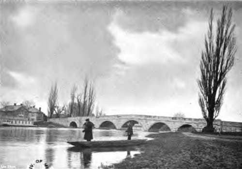

Chapter XI. Fishing For Pike: "Spinning," "Live-Baiting," And "Paternostering"
Description
This section is from the book "Fishing", by Horace G. Hutchinson. Also available from Amazon: Fishing.
Chapter XI. Fishing For Pike: "Spinning," "Live-Baiting," And "Paternostering"
Most anglers consider "spinning" a more artistic way by which to capture pike than other methods, and as I have described the rod and tackles necessary for pursuing this delightful branch of the art of angling, we will go to the river, put rod, reel, and tackles together-using the long top-joint- select a 5-inch dace for our flight, first killing the bait by hitting the back of its skull; then seeing that the bait spins nicely, we will begin by fishing all the nearest water. Unwinding from our reel enough line to make a cast of, say, ten yards, then drawing the bait up to within five feet or six feet of the rod top, the line held between the thumb and fingers of the left hand, and grasping the rod some little distance above the reel in the right hand, with the "button" at end of the butt placed against our right groin, and the rod held at an angle of 45 degs., we turn our right shoulder towards and half face the place we desire to cast the bait to; then, with a gentle but accelerated swing of the rod-top, as the " heft" or strain on the line is felt, we release it, and the bait should reach the spot wished and drop into the water with scarcely a splash* Practice will make skilful, then the distance of casting the bait may be increased as the angler becomes more and more proficient.
It is not of much use spinning in water much exceeding six feet in depth. Quiet streams alongside sedges or spear-grass; near or between weed-growths and beds of water-lilies, whose stems and leaves have been cut off by winter frosts; these, and shallows near deep holes and weirs, are all excellent places for " spinning," and likely to hold good fish. After making a " cast," lower the rod-point to within a couple or three feet of the water, and, holding it at an angle to the bait, begin by drawing in the line at a moderate speed with the left hand, and if a small back-stroke of the rod-top is given between the intervals of drawing in the line, it adds to the attractiveness of the spinning-bait. The draws or pulls on the line and movement of the rod-top should be varied in length and quickness according to the depth of water, the left hand making a draw about every two seconds, each length of line drawn in being about four feet, and a cast should be made over every two yards of water fished.
If trees or weed-beds cumber a river's bank, and there is danger of casting the bait into them, the angler should let the line run through the fingers of his left hand, instantly closing them and gripping the line, thus arresting his " cast," and possibly avoiding breakage by getting hung up in boughs or other obstructions. The bait should not be lifted from the water until close up to the bank, as pike frequently lurk alongside a bank, especially where sedges margin the water.
Spinning is fine sport when pike are "roving" in search of food; then is the time to " spin " your bait within a yard or two of feeding fish, for " ten to one " it will be seized with a rush that will make the angler " burn with excitement."
To borrow a capital pike fisherman's (Mr. H. B. Bromhead's) description as to how the practical spinner goes to work: "He makes no erratic ' casts.' His bait, properly leaded, shoots evenly and swiftly to the desired haven, like an arrow from the bow. Right across the river-25 yards if an inch-it falls right under the boughs of a drooping willow, into a quiet eddy. With but little splash the bait drops into the water, and, after sinking a foot or two, is drawn evenly across the river.
" It is a pikey bit of water; a fringe of waving reeds bordering the bank-a special retreat this for a fine fish. Is Master Pike at home to-day ? He is. A swirl in the water, a sudden resistance on the line, a gleam of light colour in the dark-green depths of the river flowing smoothly along, as a mighty fish seizes the bait and endeavours to return with its captive to its lair. Not so fast, my friend. That eleven-foot of India cane is struck upwards smartly, the line twangs like a harp-string, and a right royal battle has commenced,
" Gamely the fish struggles, vainly endeavouring to regain its old quarters, which for months past have been its home-a place carefully avoided by every well-educated roach and dace in the water. It is not to be, though. Three or four frantic plunges on the part of the pike, as many steady pulls by Piscator, and a handsome 15-lb. fish is brought within reach of the gaff, or landing-net."
Spinning has this advantage, there is no sloppy bait-can to carry, but a couple or three dozen of selected baits instead, packed in bran, a tackle-case, including artificial baits, and whisky-flask in pocket; gaff and fish-bag in sling, rod in hand, warmly clad and well booted, nothing can be more enjoyable or healthful than to wander beside a "fish-full" river, catching pike here and there.
Having just alluded to "artificial" baits, of which a great variety are kept in stock at tackle-shops-I say kept advisedly, because many of them don't sell, for they are useless as pike lures- I may mention a few that are useful, when natural baits cannot be obtained, viz.: the " Convolute Eel," " Bell's Life spinning-bait," and the Wagtail." Also baits with reversible flanges and tails, which entirely prevent kinking in trace and line,1 as these baits rotate either to right or left, as the angler chooses. They spin accurately, don't kink the line, have a natural, fish-like appearance in the water, can be made of any weight, and no supplementary lead is needed on the trace. On one of these reversible tail-baits, fishing the Dorsetshire "Frome," I ran seventeen jack and pike, and landed sixteen of them. There are also mechanical appliances to assist the " tiro " who may find it difficult to put a natural bait on a flight to spin properly. Among the best of these are the " Archer Spinner," the " Abbey Mills," and the "A. i " Spinner.

Continue to:
- prev: Fishing For Pike: Rods And Tackles. Continued
- Table of Contents
- next: Fishing For Pike: "Spinning," "Live-Baiting," And "Paternostering". Continued